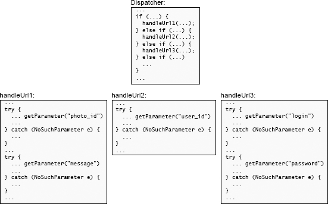
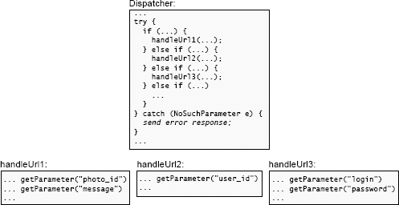

定义不存在的错误
第 10 章 定义不存在的错误
Chapter 10 Define Errors Out Of Existence
Exception handling is one of the worst sources of complexity in software systems. Code that deals with special conditions is inherently harder to write than code that deals with normal cases, and developers often define exceptions without considering how they will be handled. This chapter discusses why exceptions contribute disproportionately to complexity, then it shows how to simplify exception handling. The key overall lesson from this chapter is to reduce the number of places where exceptions must be handled; in many cases the semantics of operations can be modified so that the normal behavior handles all situations and there is no exceptional condition to report (hence the title of this chapter).
异常处理是软件系统中最糟糕的复杂性来源之一。处理特殊情况的代码在本质上比处理正常情况的代码更难编写，并且开发人员经常在定义异常时不考虑异常的处理方式。本章讨论了为什么异常对复杂性的贡献不成比例，然后说明了如何简化异常处理。本章总的主要教训是减少必须处理异常的地方的数量。在许多情况下，可以修改操作的语义，以便正常行为可以处理所有情况，并且没有要报告的特殊条件（因此，本章标题）。
10.1 Why exceptions add complexity 为什么异常会增加复杂性
I use the term exception to refer to any uncommon condition that alters the normal flow of control in a program. Many programming languages include a formal exception mechanism that allows exceptions to be thrown by lower-level code and caught by enclosing code. However, exceptions can occur even without using a formal exception reporting mechanism, such as when a method returns a special value indicating that it didn’t complete its normal behavior. All of these forms of exceptions contribute to complexity.
我使用“异常”一词来指代任何会改变程序中正常控制流程的不常见条件。许多编程语言都包含一种正式的异常机制，该机制允许异常由低级代码引发并由封闭代码捕获。但是，即使不使用正式的异常报告机制，异常也可能发生，例如，当某个方法返回一个特殊值指示其未完成其正常行为时。所有这些形式的异常都会增加复杂性。
A particular piece of code may encounter exceptions in several different ways:
一段特定的代码可能会以几种不同的方式遇到异常：
- A caller may provide bad arguments or configuration information.
- An invoked method may not be able to complete a requested operation. For example, an I/O operation may fail, or a required resource may not be available.
- In a distributed system, network packets may be lost or delayed, servers may not respond in a timely fashion, or peers may communicate in unexpected ways.
- The code may detect bugs, internal inconsistencies, or situations it is not prepared to handle.
- 调用方可能会提供错误的参数或配置信息。
- 调用的方法可能无法完成请求的操作。例如，I/O 操作可能失败，或者所需的资源可能不可用。
- 在分布式系统中，网络数据包可能会丢失或延迟，服务器可能无法及时响应，或者对等方可能会以意想不到的方式进行通信。
- 该代码可能会检测到错误，内部不一致或未准备处理的情况。
Large systems have to deal with many exceptional conditions, particularly if they are distributed or need to be fault-tolerant. Exception handling can account for a significant fraction of all the code in a system.
大型系统必须应对许多特殊情况，特别是在它们是分布式的或需要容错的情况下。异常处理可以占系统中所有代码的很大一部分。
Exception handling code is inherently more difficult to write than normal-case code. An exception disrupts the normal flow of the code; it usually means that something didn’t work as expected. When an exception occurs, the programmer can deal with it in two ways, each of which can be complicated. The first approach is to move forward and complete the work in progress in spite of the exception. For example, if a network packet is lost, it can be resent; if data is corrupted, perhaps it can be recovered from a redundant copy. The second approach is to abort the operation in progress and report the exception upwards. However, aborting can be complicated because the exception may have occurred at a point where system state is inconsistent (a data structure might have been partially initialized); the exception handling code must restore consistency, such as by unwinding any changes made before the exception occurred.
异常处理代码天生就比正常情况下的代码更难写。异常中断了正常的代码流;它通常意味着某事没有像预期的那样工作。当异常发生时，程序员可以用两种方法处理它，每种方法都很复杂。第一种方法是向前推进并完成正在进行的工作，尽管存在例外。例如，如果一个网络数据包丢失，它可以被重发;如果数据损坏了，也许可以从冗余副本中恢复数据。第二种方法是中止正在进行的操作，向上报告异常。但是，中止可能很复杂，因为异常可能发生在系统状态不一致的地方(数据结构可能已经部分初始化);异常处理代码必须恢复一致性，例如通过撤销发生异常之前所做的任何更改。
Furthermore, exception handling code creates opportunities for more exceptions. Consider the case of resending a lost network packet. Perhaps the packet wasn’t actually lost, but was simply delayed. In this case, resending the packet will result in duplicate packets arriving at the peer; this introduces a new exceptional condition that the peer must handle. Or, consider the case of recovering lost data from a redundant copy: what if the redundant copy has also been lost? Secondary exceptions occurring during recovery are often more subtle and complex than the primary exceptions. If an exception is handled by aborting the operation in progress, then this must be reported to the caller as another exception. To prevent an unending cascade of exceptions, the developer must eventually find a way to handle exceptions without introducing more exceptions.
此外，异常处理代码为更多异常创造了机会。考虑重新发送丢失的网络数据包的情况。也许该数据包实际上并没有丢失，但是只是被延迟了。在这种情况下，重新发送数据包将导致重复的数据包到达对等方；这引入了对等方必须处理的新的例外条件。或者，考虑从冗余副本恢复丢失的数据的情况：如果冗余副本也丢失了怎么办？在恢复期间发生的次要异常通常比主要异常更加微妙和复杂。如果通过中止正在进行的操作来处理异常，则必须将此异常作为另一个异常报告给调用方。为了防止无休止的异常级联，开发人员最终必须找到一种在不引入更多异常的情况下处理异常的方法。
Language support for exceptions tends to be verbose and clunky, which makes exception handling code hard to read. For example, consider the following code, which reads a collection of tweets from a file using Java’s support for object serialization and deserialization:
语言对异常的支持往往是冗长而笨拙的，这使得异常处理代码难以阅读。例如，考虑以下代码，该代码使用 Java 对对象序列化和反序列化的支持从文件中读取 tweet 的集合：
1 | try ( |
Just the basic try-catch boilerplate accounts for more lines of code than the code for normal-case operation, without even considering the code that actually handles the exceptions. It is hard to relate the exception handling code to the normal-case code: for example, it’s not obvious where each exception is generated. An alternative approach is to break up the code into many distinct try blocks; in the extreme case there could be a try for each line of code that can generate an exception. This would make it clear where exceptions occur, but the try blocks themselves break up the flow of the code and make it harder to read; in addition, some exception handling code might end up duplicated in multiple try blocks.
只是基本的 try-catch 样板代码比正常情况下的操作代码所占的代码行更多，甚至没有考虑实际处理异常的代码。很难将异常处理代码与普通情况代码相关联：例如，每个异常的生成位置都不明显。另一种方法是将代码分解为许多不同的 try 块。在极端情况下，可能会尝试尝试每行可能产生异常的代码。这样可以清楚地说明异常发生的位置，但是 try 块本身会破坏代码流，并使代码难以阅读。此外，某些异常处理代码可能最终会在多个 try 块中重复。
It’s difficult to ensure that exception handling code really works. Some exceptions, such as I/O errors, can’t easily be generated in a test environment, so it’s hard to test the code that handles them. Exceptions don’t occur very often in running systems, so exception handling code rarely executes. Bugs can go undetected for a long time, and when the exception handling code is finally needed, there’s a good chance that it won’t work (one of my favorite sayings: “code that hasn’t been executed doesn’t work”). A recent study found that more than 90% of catastrophic failures in distributed data-intensive systems were caused by incorrect error handling1. When exception handling code fails, it’s difficult to debug the problem, since it occurs so infrequently.
确保异常处理代码真正起作用是困难的。某些异常（例如 I/O 错误）在测试环境中不易生成，因此很难测试处理它们的代码。异常在运行的系统中很少发生，因此异常处理代码很少执行。错误可能会长时间未被发现，并且当最终需要异常处理代码时，它很有可能无法正常工作（我最喜欢的一句话是：“未执行的代码无效”） 。最近的一项研究发现，分布式数据密集型系统中超过 90％的灾难性故障是由错误的错误处理引起的 1。当异常处理代码失败时，很难调试该问题，因为它很少发生。
10.2 Too many exceptions 异常过多
Programmers exacerbate the problems related to exception handling by defining unnecessary exceptions. Most programmers are taught that it’s important to detect and report errors; they often interpret this to mean “the more errors detected, the better.” This leads to an over-defensive style where anything that looks even a bit suspicious is rejected with an exception, which results in a proliferation of unnecessary exceptions that increase the complexity of the system.
程序员通过定义不必要的异常加剧了与异常处理有关的问题。告诉大多数程序员，检测和报告错误很重要。他们通常将其解释为“检测到的错误越多越好”。这导致了一种过分防御的风格，其中任何看起来甚至有点可疑的东西都被拒绝，并带有异常，这导致了不必要的异常的泛滥，从而增加了系统的复杂性。
I made this mistake myself in the design of the Tcl scripting language. Tcl contains an unset command that can be used to remove a variable. I defined unset so that it throws an error if the variable doesn’t exist. At the time I thought that it must be a bug if someone tries to delete a variable that doesn’t exist, so Tcl should report it. However, one of the most common uses of unset is to clean up temporary state created by some previous operation. It’s often hard to predict exactly what state was created, particularly if the operation aborted partway through. Thus, the simplest thing is to delete all of the variables that might possibly have been created. The definition of unset makes this awkward: developers end up enclosing calls to unset in catch statements to catch and ignore errors thrown by unset. In retrospect, the definition of the unset command is one of the biggest mistakes I made in the design of Tcl.
在设计 Tcl 脚本语言时，我自己就犯了这个错误。Tcl 包含一个未设置的命令，可用于删除变量。我定义了 unset 以便在变量不存在时抛出错误。当时我认为，如果有人试图删除一个不存在的变量，那么它一定是一个 bug，所以 Tcl 应该报告它。然而，unset 最常见的用途之一是清理以前操作创建的临时状态。通常很难准确地预测创建了什么状态，特别是在操作中途中止的情况下。因此，最简单的方法是删除可能已经创建的所有变量。unset 的定义使得这种情况很尴尬:开发人员最终会在 catch 语句中封装对 unset 的调用，以捕获并忽略 unset 抛出的错误。回顾过去，unset 命令的定义是我在 Tcl 设计中犯下的最大错误之一。
It’s tempting to use exceptions to avoid dealing with difficult situations: rather than figuring out a clean way to handle it, just throw an exception and punt the problem to the caller. Some might argue that this approach empowers callers, since it allows each caller to handle the exception in a different way. However, if you are having trouble figuring out what to do for the particular situation, there’s a good chance that the caller won’t know what to do either. Generating an exception in a situation like this just passes the problem to someone else and adds to the system’s complexity.
试图使用异常来避免处理困难的情况很诱人：与其想出一种干净的方法来处理它，不如抛出一个异常并将问题平移给调用者。有人可能会争辩说，这种方法可以赋予调用者权力，因为它允许每个调用者以不同的方式处理异常。但是，如果您在确定特定情况下该怎么做时遇到困难，则呼叫者很可能都不知道该怎么办。在这种情况下生成异常只会将问题传递给其他人，并增加系统的复杂性。
The exceptions thrown by a class are part of its interface; classes with lots of exceptions have complex interfaces, and they are shallower than classes with fewer exceptions. An exception is a particularly complex element of an interface. It can propagate up through several stack levels before being caught, so it affects not just the method’s caller, but potentially also higher-level callers (and their interfaces).
类抛出的异常是其接口的一部分；具有大量异常的类具有复杂的接口，并且比具有较少异常的类浅。异常是接口中特别复杂的元素。它可以在被捕获之前通过多个堆栈级别向上传播，因此它不仅影响方法的调用者，而且还可能影响更高级别的调用者（及其接口）。
Throwing exceptions is easy; handling them is hard. Thus, the complexity of exceptions comes from the exception handling code. The best way to reduce the complexity damage caused by exception handling is to reduce the number of places where exceptions have to be handled. The rest of this chapter will discuss four techniques for reducing the number of exception handlers.
抛出异常很容易；处理它们很困难。因此，异常的复杂性来自异常处理代码。减少由异常处理引起的复杂性破坏的最佳方法是减少必须处理异常的位置的数量。本章的其余部分将讨论减少异常处理程序数量的四种技术。
10.3 Define errors out of existence 定义错误不存在
The best way to eliminate exception handling complexity is to define your APIs so that there are no exceptions to handle: define errors out of existence. This may seem sacrilegious, but it is very effective in practice. Consider the Tcl unset command discussed above. Rather than throwing an error when unset is asked to delete an unknown variable, it should have simply returned without doing anything. I should have changed the definition of unset slightly: rather than deleting a variable, unset should ensure that a variable no longer exists. With the first definition, unset can’t do its job if the variable doesn’t exist, so generating an exception makes sense. With the second definition, it is perfectly natural for unset to be invoked with the name of a variable that doesn’t exist. In this case, its work is already done, so it can simply return. There is no longer an error case to report.
消除异常处理复杂性的最好方法是定义您的 API，以便没有异常要处理：定义错误而已。这似乎是牺牲品，但在实践中非常有效。考虑上面讨论的 Tcl unset 命令。而不是在要求 unset 删除未知变量时引发错误，它应该只是返回而无需执行任何操作。我应该稍微修改一下 unset 的定义：与其删除一个变量，不应该删除 unset 来确保一个变量不再存在。根据第一个定义，如果变量不存在，则 unset 不能执行其工作，因此生成异常是有意义的。使用第二个定义，使用不存在的变量名调用 unset 是很自然的。在这种情况下，它的工作已经完成，因此可以简单地返回。
10.4 Example: file deletion in Windows 示例：Windows 中的文件删除
File deletion provides another example of how errors can be defined away. The Windows operating system does not permit a file to be deleted if it is open in a process. This is a continual source of frustration for developers and users. In order to delete a file that is in use, the user must search through the system to find the process that has the file open, and then kill that process. Sometimes users give up and reboot their system, just so they can delete a file.
文件删除提供了如何定义错误的另一个示例。Windows 操作系统不允许删除文件（如果已在进程中打开文件）。对于开发人员和用户来说，这是不断沮丧的根源。为了删除正在使用的文件，用户必须在系统中搜索以找到已打开文件的进程，然后终止该进程。有时用户放弃并重新启动系统，只是为了删除文件。
The Unix operating system defines file deletion more elegantly. In Unix, if a file is open when it is deleted, Unix does not delete the file immediately. Instead, it marks the file for deletion, then the delete operation returns successfully. The file name has been removed from its directory, so no other processes can open the old file and a new file with the same name can be created, but the existing file data persists. Processes that already have the file open can continue to read it and write it normally. Once the file has been closed by all of the accessing processes, its data is freed.
Unix 操作系统更优雅地定义了文件删除。在 Unix 中，如果在删除文件时打开了文件，则 Unix 不会立即删除该文件。而是将文件标记为删除，然后删除操作成功返回。该文件名已从其目录中删除，因此其他进程无法打开该旧文件，并且可以创建具有相同名称的新文件，但现有文件数据将保留。已经打开文件的进程可以继续读取和正常写入文件。一旦所有访问进程都关闭了文件，便释放其数据。
The Unix approach defines away two different kinds of errors. First, the delete operation no longer returns an error if the file is currently in use; the delete succeeds, and the file will eventually be deleted. Second, deleting a file that’s in use does not create exceptions for the processes using the file. One possible approach to this problem would have been to delete the file immediately and mark all of the opens of the file to disable them; any attempts by other processes to read or write the deleted file would fail. However, this approach would create new errors for those processes to handle. Instead, Unix allows them to keep accessing the file normally; delaying the file deletion defines errors out of existence.
Unix 方法定义了两种不同的错误。首先，如果文件当前正在使用中，则删除操作不再返回错误；删除成功，该文件最终将被删除。其次，删除正在使用的文件不会为使用该文件的进程创建例外。解决此问题的一种可能方法是立即删除文件并标记文件的所有打开以禁用它们。其他进程读取或写入已删除文件的任何尝试均将失败。但是，此方法将为那些要处理的过程创建新的错误。相反，Unix 允许他们继续正常访问文件。延迟文件删除将定义错误不存在。
It may seem strange that Unix allows a process to continue to read and write a doomed file, but I have never encountered a situation where this caused significant problems. The Unix definition of file deletion is much simpler to work with, both for developers and users, than the Windows definition.
Unix 允许进程继续读取和写入已损坏的文件可能看起来很奇怪，但是我从未遇到过引起严重问题的情况。对于开发人员和用户，Unix 删除文件的定义比 Windows 定义要容易得多。
10.5 Example: Java substring method 示例：Java 子字符串方法
As a final example, consider the Java String class and its substring method. Given two indexes into a string, substring returns the substring starting at the character given by the first index and ending with the character just before the second index. However, if either index is outside the range of the string, then substring throws IndexOutOfBoundsException. This exception is unnecessary and complicates the use of this method. I often find myself in a situation where one or both of the indices may be outside the range of the string, and I would like to extract all of the characters in the string that overlap the specified range. Unfortunately, this requires me to check each of the indices and round them up to zero or down to the end of the string; a one-line method call now becomes 5–10 lines of code.
作为最后一个示例，请考虑 Java String 类及其子字符串方法。给定一个字符串中的两个索引，substring 返回该子字符串，该字符串从第一个索引给定的字符开始，以第二个索引之前的字符结束。但是，如果两个索引中的任何一个都超出字符串的范围，则子字符串将引发 IndexOutOfBoundsException。此异常是不必要的，并且会使此方法的使用复杂化。我经常发现自己处于一个或两个索引可能不在字符串范围内的情况，并且我想提取字符串中与指定范围重叠的所有字符。不幸的是，这要求我检查每个索引并将它们向上舍入为零或向下舍入到字符串的末尾。现在，单行方法调用变成 5-10 行代码。
The Java substring method would be easier to use if it performed this adjustment automatically, so that it implemented the following API: “returns the characters of the string (if any) with index greater than or equal to beginIndex and less than endIndex.” This is a simple and natural API, and it defines the IndexOutOfBoundsException exception out of existence. The method’s behavior is now well-defined even if one or both of the indexes are negative, or if beginIndex is greater than endIndex. This approach simplifies the API for the method while increasing its functionality, so it makes the method deeper. Many other languages have taken the error-free approach; for example, Python returns an empty result for out-of-range list slices.
如果 Java 子字符串方法自动执行此调整，则将更易于使用，因此它实现了以下 API：“返回索引大于或等于 beginIndex 且小于 endIndex 的字符串的字符（如果有）。” 这是一个简单自然的 API，它定义了 IndexOutOfBoundsException 异常。现在，即使一个或两个索引均为负，或者 beginIndex 大于 endIndex，该方法的行为也已明确定义。这种方法简化了方法的 API，同时增加了其功能，因此使方法更深。许多其他语言都采用了无错误的方法。例如，Python 对于超出范围的列表切片返回空结果。
When I argue for defining errors out of existence, people sometimes counter that throwing errors will catch bugs; if errors are defined out of existence, won’t that result in buggier software? Perhaps this is why the Java developers decided that substring should throw exceptions. The error-ful approach may catch some bugs, but it also increases complexity, which results in other bugs. In the error-ful approach, developers must write additional code to avoid or ignore the errors, and this increases the likelihood of bugs; or, they may forget to write the additional code, in which case unexpected errors may be thrown at runtime. In contrast, defining errors out of existence simplifies APIs and it reduces the amount of code that must be written.
当我主张定义错误而不再存在时，人们有时会反驳说抛出错误会捕获错误。如果错误定义不存在，那会不会导致 Buggier 软件出现？也许这就是 Java 开发人员决定子字符串应引发异常的原因。错误的方法可能会捕获一些错误，但也会增加复杂性，从而导致其他错误。在错误有效的方法中，开发人员必须编写额外的代码来避免或忽略错误，这增加了发生错误的可能性。或者，他们可能会忘记编写其他代码，在这种情况下，运行时可能会引发意外错误。相反，定义错误而不存在将简化 API，并减少必须编写的代码量。
Overall, the best way to reduce bugs is to make software simpler.
总体而言，减少错误的最好方法是简化软件。
10.6 Mask exceptions 掩码异常
The second technique for reducing the number of places where exceptions must be handled is exception masking. With this approach, an exceptional condition is detected and handled at a low level in the system, so that higher levels of software need not be aware of the condition. Exception masking is particularly common in distributed systems. For instance, in a network transport protocol such as TCP, packets can be dropped for various reasons such as corruption and congestion. TCP masks packet loss by resending lost packets within its implementation, so all data eventually gets through and clients are unaware of the dropped packets.
减少必须处理异常的地方数量的第二种技术是异常屏蔽。使用这种方法，可以在系统的较低级别上检测和处理异常情况，因此，更高级别的软件无需知道该情况。异常屏蔽在分布式系统中尤其常见。例如，在诸如 TCP 的网络传输协议中，由于各种原因（例如损坏和拥塞），可能会丢弃数据包。TCP 通过在其实现中重新发送丢失的数据包来掩盖数据包的丢失，因此所有数据最终都将通过，并且客户端不知道丢失的数据包。
A more controversial example of masking occurs in the NFS network file system. If an NFS file server crashes or fails to respond for any reason, clients reissue their requests to the server over and over again until the problem is eventually resolved. The low-level file system code on the client does not report any exceptions to the invoking application. The operation in progress (and hence the application) just hangs until the operation can complete successfully. If the hang lasts more than a short time, the NFS client prints messages on the user’s console of the form “NFS server xyzzy not responding still trying.”
NFS 网络文件系统中出现了一个更具争议性的屏蔽示例。如果 NFS 文件服务器由于任何原因崩溃或无法响应，客户端将一遍又一遍地向服务器发出请求，直到问题最终得到解决。客户端上的低级文件系统代码不会向调用应用程序报告任何异常。正在进行的操作（以及因此的应用程序）只是挂起，直到操作可以成功完成。如果挂起持续的时间不超过一小段时间，则 NFS 客户端将在用户控制台上以“ NFS 服务器 xyzzy 无法响应仍在尝试响应”的形式打印消息。
NFS users often complain about the fact that their applications hang while waiting for an NFS server to resume normal operation. Many people have suggested that NFS should abort operations with an exception rather than hanging. However, reporting exceptions would make things worse, not better. There’s not much an application can do if it loses access to its files. One possibility would be for the application to retry the file operation, but this would still hang the application, and it’s easier to perform the retry in one place in the NFS layer, rather than at every file system call in every application (a compiler shouldn’t have to worry about this!). The other alternative is for applications to abort and return errors to their callers. It’s unlikely that the callers would know what to do either, so they would abort as well, resulting in a collapse of the user’s working environment. Users still wouldn’t be able to get any work done while the file server was down, and they would have to restart all of their applications once the file server came back to life.
NFS 用户经常抱怨这样的事实，即他们的应用程序在等待 NFS 服务器恢复正常运行时挂起。许多人建议 NFS 应该异常终止操作而不是挂起。但是，报告异常会使情况更糟，而不是更好。如果应用程序无法访问其文件，则无能为力。一种可能性是应用程序重试文件操作，但这仍然会使应用程序挂起，并且在 NFS 层中的一个位置执行重试会比在每个应用程序中的每个文件系统调用处执行重试更容易（编译器应不必为此担心！）。另一种选择是让应用程序中止并将错误返回给调用者。呼叫者不太可能知道该怎么做，因此他们也将中止，导致用户工作环境崩溃。用户在文件服务器关闭时仍然无法完成任何工作，并且一旦文件服务器恢复工作，他们将不得不重新启动所有应用程序。
Thus, the best alternative is for NFS to mask the errors and hang applications. With this approach, applications don’t need any code to deal with server problems, and they can resume seamlessly once the server comes back to life. If users get tired of waiting, they can always abort applications manually.
因此，最好的替代方法是让 NFS 掩盖错误并挂起应用程序。通过这种方法，应用程序不需要任何代码来处理服务器问题，并且一旦服务器恢复运行，它们就可以无缝恢复。如果用户厌倦了等待，他们总是可以手动中止应用程序。
Exception masking doesn’t work in all situations, but it is a powerful tool in the situations where it works. It results in deeper classes, since it reduces the class’s interface (fewer exceptions for users to be aware of) and adds functionality in the form of the code that masks the exception. Exception masking is an example of pulling complexity downward.
异常屏蔽并非在所有情况下都有效，但是在它起作用的情况下它是一个强大的工具。它导致了更深的类，因为它减少了类的界面（用户需要注意的异常更少）并以掩盖异常的代码形式添加了功能。异常屏蔽是降低复杂性的一个例子。
10.7 Exception aggregation 异常聚集
The third technique for reducing complexity related to exceptions is exception aggregation. The idea behind exception aggregation is to handle many exceptions with a single piece of code; rather than writing distinct handlers for many individual exceptions, handle them all in one place with a single handler.
减少与异常相关的复杂性的第三种技术是异常聚合。异常聚合的思想是用一个代码段处理许多异常。与其为多个单独的异常编写不同的处理程序，不如用一个处理程序将它们全部处理在一个地方。
Consider how to handle missing parameters in a Web server. A Web server implements a collection of URLs. When the server receives an incoming URL, it dispatches to a URL-specific service method to process that URL and generate a response. The URL contains various parameters that are used to generate the response. Each service method will call a lower-level method (let’s call it getParameter) to extract the parameters that it needs from the URL. If the URL does not contain the desired parameter, getParameter throws an exception.
考虑如何处理 Web 服务器中缺少的参数。Web 服务器实现 URL 的集合。服务器收到传入的 URL 时，将分派到特定于 URL 的服务方法来处理该 URL 并生成响应。该 URL 包含用于生成响应的各种参数。每个服务方法都将调用一个较低层的方法（将其称为 getParameter）以从 URL 中提取所需的参数。如果 URL 不包含所需的参数，则 getParameter 会引发异常。
When students in a software design class implemented such a server, many of them wrapped each distinct call to getParameter in a separate exception handler to catch NoSuchParameter exceptions, as in Figure 10.1. This resulted in a large number of handlers, all of which did essentially the same thing (generate an error response).
当参加软件设计课程的学生实现这样的服务器时，他们中的许多人将对 getParameter 的每个不同调用包装在单独的异常处理程序中以捕获 NoSuchParameter 异常，如图 10.1 所示。这导致大量的处理程序，所有这些处理程序基本上都执行相同的操作（生成错误响应）。

Figure 10.1: The code at the top dispatches to one of several methods in a Web server, each of which handles a particular URL. Each of those methods (bottom) uses parameters from the incoming HTTP request. In this figure, there is a separate exception handler for each call to getParameter; this results in duplicated code.
图 10.1：顶部的代码将分派给 Web 服务器中的几种方法之一，每种方法都处理一个特定的 URL。每个方法（底部）都使用传入 HTTP 请求中的参数。在此图中，每个对 getParameter 的调用都有一个单独的异常处理程序。这导致重复的代码。
A better approach is to aggregate the exceptions. Instead of catching the exceptions in the individual service methods, let them propagate up to the top-level dispatch method for the Web server, as in Figure 10.2. A single handler in this method can catch all of the exceptions and generate an appropriate error response for missing parameters.
更好的方法是汇总异常。让它们传播到 Web 服务器的顶级调度方法，而不是在单个服务方法中捕获异常，如图 10.2 所示。此方法中的单个处理程序可以捕获所有异常，并为丢失的参数生成适当的错误响应。
The aggregation approach can be taken even further in the Web example. There are many other errors besides missing parameters that can occur while processing a Web page; for example, a parameter might not have the right syntax (the service method expected an integer, but the value was “xyz”), or the user might not have permission for the requested operation. In each case, the error should result in an error response; the errors differ only in the error message to include in the response (“parameter ‘quantity’ not present in URL” or “bad value ‘xyz’ for ‘quantity’ parameter; must be positive integer”). Thus, all conditions resulting in an error response can be handled with a single top-level exception handler. The error message can be generated at the time the exception is thrown and included as a variable in the exception record; for example, getParameter will generate the “parameter ‘quantity’ not present in URL” message. The top-level handler extracts the message from the exception and incorporates it into the error response.
在 Web 示例中甚至可以采用聚合方法。处理网页时，除了缺少参数外，还有许多其他错误；例如，参数可能没有正确的语法（服务方法应为整数，但值为“ xyz”），或者用户可能无权执行所请求的操作。在每种情况下，错误都应导致错误响应。错误仅在响应中包含的错误消息中有所不同（“ URL 中不存在参数’数量’”或“’数量’参数的错误值’xyz’；必须为正整数”）。因此，所有导致错误响应的条件都可以使用单个顶级异常处理程序进行处理。错误消息可以在引发异常时生成，并作为变量包含在异常记录中。例如，getParameter 将生成“ URL 中不存在的参数’数量’”消息。顶级处理程序从异常中提取消息，并将其合并到错误响应中。

Figure 10.2: This code is functionally equivalent to Figure 10.1, but exception handling has been aggregated: a single exception handler in the dispatcher catches all of the NoSuchParameter exceptions from all of the URL-specific methods.
图 10.2：此代码在功能上等效于图 10.1，但是异常处理已聚合：分派器中的单个异常处理程序从所有特定于 URL 的方法中捕获所有 NoSuchParameter 异常。
The aggregation described in the preceding paragraph has good properties from the standpoint of encapsulation and information hiding. The top-level exception handler encapsulates knowledge about how to generate error responses, but it knows nothing about specific errors; it just uses the error message provided in the exception. The getParameter method encapsulates knowledge about how to extract a parameter from a URL, and it also knows how to describe extraction errors in a human-readable form. These two pieces of information are closely related, so it makes sense for them to be in the same place. However, getParameter knows nothing about the syntax of an HTTP error response. As new functionality is added to the Web server, new methods like getParameter may be created with their own errors. If the new methods throw exceptions in the same way as getParameter (by generating exceptions that inherit from the same superclass and including an error message in each exception), they can plug into the existing system with no other changes: the top-level handler will automatically generate error responses for them.
从封装和信息隐藏的角度来看，上一段中描述的聚合具有良好的属性。顶级异常处理程序封装了有关如何生成错误响应的知识，但对特定错误一无所知。它仅使用异常中提供的错误消息。getParameter 方法封装了有关如何从 URL 提取参数的知识，并且还知道如何以人类可读的形式描述提取错误。这两个信息密切相关，因此将它们放在同一位置是很有意义的。但是，getParameter 对 HTTP 错误响应的语法一无所知。随着向 Web 服务器中添加了新功能，可能会创建具有类似自身错误的新方法，如 getParameter。
This example illustrates a generally-useful design pattern for exception handling. If a system processes a series of requests, it’s useful to define an exception that aborts the current request, cleans up the system’s state, and continues with the next request. The exception is caught in a single place near the top of the system’s request-handling loop. This exception can be thrown at any point in the processing of a request to abort the request; different subclasses of the exception can be defined for different conditions. Exceptions of this type should be clearly distinguished from exceptions that are fatal to the entire system.
此示例说明了用于异常处理的通用设计模式。如果系统处理一系列请求，则定义一个异常以中止当前请求，清除系统状态并继续下一个请求非常有用。异常被捕获在系统请求处理循环顶部附近的单个位置。在处理中止请求的任何时候都可以抛出该异常。可以为不同的条件定义异常的不同子类。应该将这种类型的异常与对整个系统致命的异常区分开来。
Exception aggregation works best if an exception propagates several levels up the stack before it is handled; this allows more exceptions from more methods to be handled in the same place. This is the opposite of exception masking: masking usually works best if an exception is handled in a low-level method. For masking, the low-level method is typically a library method used by many other methods, so allowing the exception to propagate would increase the number of places where it is handled. Masking and aggregation are similar in that both approaches position an exception handler where it can catch the most exceptions, eliminating many handlers that would otherwise need to be created.
如果异常在处理之前在堆栈中传播了多个级别，则异常聚集最有效。这样可以在同一位置处理更多方法的更多异常。这与异常屏蔽相反：如果使用低级方法处理异常，则屏蔽通常效果最好。对于屏蔽，低级方法通常是许多其他方法使用的库方法，因此，允许传播异常会增加处理该异常的位置数。掩码和聚合的相似之处在于，这两种方法都将异常处理程序置于可以捕获最多异常的位置，从而消除了许多本来需要创建的处理程序。
Another example of exception aggregation occurs in the RAMCloud storage system for crash recovery. A RAMCloud system consists of a collection of storage servers that keep multiple copies of each object, so the system can recover from a variety of failures. For example, if a server crashes and loses all of its data, RAMCloud reconstructs the lost data using copies stored on other servers. Errors can also happen on a smaller scale; for example, a server may discover that an individual object is corrupted.
RAMCloud 存储系统中发生异常聚集的另一个示例是崩溃恢复。RAMCloud 系统由一组存储服务器组成，这些存储服务器保留每个对象的多个副本，因此系统可以从各种故障中恢复。例如，如果服务器崩溃并丢失其所有数据，RAMCloud 会使用存储在其他服务器上的副本来重建丢失的数据。错误也可能在较小的范围内发生。例如，服务器可能发现单个对象已损坏。
RAMCloud does not have separate recovery mechanisms for each different kind of error. Instead, RAMCloud “promotes” many smaller errors into larger ones. RAMCloud could, in principle, handle a corrupted object by restoring that one object from a backup copy. However, it doesn’t do this. Instead, if it discovers a corrupted object it crashes the server containing the object. RAMCloud uses this approach because crash recovery is quite complex and this approach minimized the number of different recovery mechanisms that had to be created. Creating a recovery mechanism for crashed servers was unavoidable, so RAMCloud uses the same mechanism for other kinds of recovery as well. This reduced the amount of code that had to be written, and it also meant that server crash recovery gets invoked more often. As a result, bugs in recovery are more likely to be discovered and fixed.
对于每种不同类型的错误，RAMCloud 没有单独的恢复机制。相反，RAMCloud 将许多较小的错误“提升”为较大的错误。原则上，RAMCloud 可以通过从备份副本中恢复一个损坏的对象来处理这个损坏的对象。然而，它并不这样做。相反，如果它发现一个损坏的对象，它会使包含该对象的服务器崩溃。RAMCloud 使用这种方法是因为崩溃恢复非常复杂，而且这种方法最小化了必须创建的不同恢复机制的数量。为崩溃的服务器创建恢复机制是不可避免的，因此 RAMCloud 对其他类型的恢复也使用相同的机制。这减少了必须编写的代码量，而且这还意味着服务器崩溃恢复将更频繁地被调用。因此，恢复中的 bug 更有可能被发现和修复。
One disadvantage of promoting a corrupted object into a server crash is that it increases the cost of recovery considerably. This is not a problem in RAMCloud, since object corruption is quite rare. However, error promotion may not make sense for errors that happen frequently. As one example, it would not be practical to crash a server anytime one of its network packets is lost.
将损坏的对象升级为服务器崩溃的一个缺点是，它大大增加了恢复成本。这在 RAMCloud 中不是问题，因为对象损坏非常罕见。但是，错误升级对于经常发生的错误可能没有意义。举一个例子，在服务器的任何网络数据包丢失时使服务器崩溃是不切实际的。
One way of thinking about exception aggregation is that it replaces several special-purpose mechanisms, each tailored for a particular situation, with a single general-purpose mechanism that can handle multiple situations. This provides another illustration of the benefits of general-purpose mechanisms.
考虑异常聚合的一种方法是，它用可以处理多种情况的单个通用机制替换了几种针对特定情况而量身定制的特殊用途的机制。这再次说明了通用机制的好处。
10.8 Just crash? 崩溃了吗？
The fourth technique for reducing complexity related to exception handling is to crash the application. In most applications there will be certain errors that it’s not worth trying to handle. Typically, these errors are difficult or impossible to handle and don’t occur very often. The simplest thing to do in response to these errors is to print diagnostic information and then abort the application.
减少与异常处理相关的复杂性的第四种技术是使应用程序崩溃。在大多数应用程序中，有些错误是不值得尝试的。通常，这些错误很难或不可能处理，而且很少发生。针对这些错误的最简单的操作是打印诊断信息，然后中止应用程序。
One example is “out of memory” errors that occur during storage allocation. Consider the malloc function in C, which returns NULL if it cannot allocate the desired block of memory. This is an unfortunate behavior, because it assumes that every single caller of malloc will check the return value and take appropriate action if there is no memory. Applications contain numerous calls to malloc, so checking the result after each call would add significant complexity. If a programmer forgets the check (which is fairly likely), then the application will dereference a null pointer if memory runs out, resulting in a crash that camouflages the real problem.
一个示例是在存储分配期间发生的“内存不足”错误。考虑一下 C 语言中的 malloc 函数，如果它无法分配所需的内存块，则该函数将返回 NULL。这是一个不幸的行为，因为它假定 malloc 的每个调用者都将检查返回值并在没有内存的情况下采取适当的措施。应用程序包含许多对 malloc 的调用，因此在每次调用后检查结果将增加相当大的复杂性。如果程序员忘记了检查（这很有可能），那么如果内存用完，应用程序将取消引用空指针，从而导致崩溃，从而掩盖了实际问题。
Furthermore, there isn’t much an application can do when it discovers that memory is exhausted. In principle the application could look for unneeded memory to free, but if the application had unneeded memory it could already have freed it, which would have prevented the out-of-memory error in the first place. Today’s systems have so much memory that memory almost never runs out; if it does, it usually indicates a bug in the application. Thus, it rarely make sense to try to handle out-of-memory errors; this creates too much complexity for too little benefit.
此外，当应用程序发现内存已用完时，它无能为力。原则上，应用程序可以寻找不需要的内存以释放它，但是如果应用程序有不需要的内存，它可以已经释放它，这首先可以防止内存不足错误。当今的系统具有如此大的内存，以至于内存几乎永远不会耗尽。如果是这样，通常表明应用程序中存在错误。因此，尝试处理内存不足错误几乎没有道理。这会带来太多的复杂性，而带来的收益却太少。
A better approach is to define a new method ckalloc, which calls malloc, checks the result, and aborts the application with an error message if memory is exhausted. The application never invokes malloc directly; it always invokes ckalloc.
更好的方法是定义一个新的 ckalloc 方法，该方法调用 malloc，检查结果，并在内存耗尽时通过错误消息中止应用程序。该应用程序从不直接调用 malloc。它总是调用 ckalloc。
In newer languages such as C++ and Java, the new operator throws an exception if memory is exhausted. There’s not much point in catching this exception, since there’s a good chance that the exception handler will also try to allocate memory, which will also fail. Dynamically allocated memory is such a fundamental element of any modern application that it doesn’t make sense for the application to continue if memory is exhausted; it’s better to crash as soon as the error is detected.
在较新的语言（例如 C ++和 Java）中，如果内存耗尽，则 new 运算符将引发异常。捕获此异常没有什么意义，因为异常处理程序很有可能还会尝试分配内存，这也会失败。动态分配的内存是任何现代应用程序中的基本元素，如果内存耗尽，则继续应用程序是没有意义的。最好在检测到错误后立即崩溃。
There are many other examples of errors where crashing the application makes sense. For most programs, if an I/O error occurs while reading or writing an open file (such as a disk hard error), or if a network socket cannot be opened, there’s not much the application can do to recover, so aborting with a clear error message is a sensible approach. These errors are infrequent, so they are unlikely to affect the overall usability of the application. Aborting with an error message is also appropriate if an application encounters an internal error such as an inconsistent data structure. Conditions like this probably indicate bugs in the program.
还有许多其他错误示例，这些错误会使应用程序崩溃很有意义。对于大多数程序，如果在读取或写入打开的文件时发生 I/O 错误（例如磁盘硬错误），或者无法打开网络套接字，则应用程序无济于事，因此中止了操作。清除错误消息是一种明智的方法。这些错误很少发生，因此它们不太可能影响应用程序的整体可用性。如果应用程序遇到内部错误（如数据结构不一致），则错误消息中止也是合适的。这样的条件可能表明程序中存在错误。
Whether or not it is acceptable to crash on a particular error depends on the application. For a replicated storage system, it isn’t appropriate to abort on an I/O error. Instead, the system must use replicated data to recover any information that was lost. The recovery mechanisms will add considerable complexity to the program, but recovering lost data is an essential part of the value the system provides to its users.
在特定错误上崩溃是否可以接受取决于应用程序。对于复制的存储系统，不适合因 I/O 错误而中止。相反，系统必须使用复制的数据来恢复丢失的任何信息。恢复机制将给程序增加相当大的复杂性，但是恢复丢失的数据是系统为用户提供的价值的重要组成部分。
10.9 Design special cases out of existence 设计特殊情况不存在
For the same reason that it makes sense to define errors out of existence, it also makes sense to define other special cases out of existence. Special cases can result in code that is riddled with if statements, which make the code hard to understand and lead to bugs. Thus, special cases should be eliminated wherever possible. The best way to do this is by designing the normal case in a way that automatically handles the special cases without any extra code.
出于同样的原因，定义不存在的错误是有意义的，而定义其他不存在的特殊情况也是有意义的。特殊情况可能导致代码中混入 if 语句，这使代码难以理解并导致错误。因此，应尽可能消除特殊情况。做到这一点的最佳方法是设计一种普通情况，这种方式可以自动处理特殊情况而无需任何额外的代码。
In the text editor project described in Chapter 6, students had to implement a mechanism for selecting text and copying or deleting the selection. Most students introduced a state variable in their selection implementation to indicate whether or not the selection exists. They probably chose this approach because there are times when no selection is visible on the screen, so it seemed natural to represent this notion in the implementation. However, this approach resulted in numerous checks to detect the “no selection” condition and handle it specially.
在第 6 章中描述的文本编辑器项目中，学生必须实现一种选择文本以及复制或删除所选内容的机制。大多数学生在他们的选择实现中引入了状态变量，以表明选择是否存在。他们之所以选择这种方法，是因为有时屏幕上看不到任何选择，因此在实现中似乎很自然地代表了这一概念。但是，这种方法导致大量检查以检测“无选择”条件并进行特殊处理。
The selection handling code can be simplified by eliminating the “no selection” special case, so that the selection always exists. When there is no selection visible on the screen, it can be represented internally with an empty selection, whose starting and ending positions are the same. With this approach, the selection management code can be written without any checks for “no selection”. When copying the selection, if the selection is empty then 0 bytes will be inserted at the new location (if implemented correctly, there will be no need to check for 0 bytes as a special case). Similarly, it should be possible to design the code for deleting the selection so that the empty case is handled without any special-case checks. Consider a selection all on a single line. To delete the selection, extract the portion of the line preceding the selection and concatenate it with the portion of the line following the selection to form the new line. If the selection is empty, this approach will regenerate the original line.
通过消除“不选择”的特殊情况，可以简化选择处理代码，从而使选择始终存在。当屏幕上没有可见的选择时，可以在内部用空的选择表示，其开始和结束位置相同。使用这种方法，可以编写选择管理代码，而无需对“不选择”进行任何检查。复制所选内容时，如果所选内容为空，则将在新位置插入 0 字节（如果正确实现，则在特殊情况下无需检查 0 字节）。同样，应该有可能设计用于删除选择的代码，以便无需任何特殊情况检查就可以处理空情况。在一行上考虑所有选择。要删除选择，提取选择之前的行的一部分，并将其与选择之后的行的部分连接起来以形成新行。如果选择为空，则此方法将重新生成原始行。
This example also illustrates the “different layer, different abstraction” idea from Chapter 7. The notion of “no selection” makes sense in terms of how the user thinks about the application’s interface, but that doesn’t mean it has to be represented explicitly inside the application. Having a selection that always exists, but is sometimes empty and thus invisible, results in a simpler implementation.
此示例还说明了第 7 章中的“不同的层，不同的抽象”概念。“无选择”的概念在用户对应用程序界面的看法方面很有意义，但这并不意味着必须明确表示它在应用程序内部。选择总是存在的，但有时是空的，因此是不可见的，这样可以简化实现。
10.10 Taking it too far 走得太远
Defining away exceptions, or masking them inside a module, only makes sense if the exception information isn’t needed outside the module. This was true for the examples in this chapter, such the Tcl unset command and the Java substring method; in the rare situations where a caller cares about the special cases detected by the exceptions, there are other ways for it to get this information.
定义异常或将其屏蔽在模块内部，仅在模块外部不需要异常信息时才有意义。对于本章中的示例，例如 Tcl unset 命令和 Java 子字符串方法，都是如此。在极少数情况下，呼叫者关心异常检测到的特殊情况，还有其他方法可以获取此信息。
However, it is possible to take this idea too far. In a module for network communication, a student team masked all network exceptions: if a network error occurred, the module caught it, discarded it, and continued as if there were no problem. This meant that applications using the module had no way to find out if messages were lost or a peer server failed; without this information, it was impossible to build robust applications. In this case, it is essential for the module to expose the exceptions, even though they add complexity to the module’s interface.
但是，有可能使这个想法太过分。在用于网络通信的模块中，一个学生团队掩盖了所有网络异常：如果发生网络错误，则模块将其捕获，丢弃并继续进行，就好像没有问题一样。这意味着使用该模块的应用程序无法确定消息是否丢失或对等服务器是否发生故障；没有这些信息，就不可能构建健壮的应用程序。在这种情况下，模块必须公开异常，即使它们增加了模块接口的复杂性。
With exceptions, as with many other areas in software design, you must determine what is important and what is not important. Things that are not important should be hidden, and the more of them the better. But when something is important, it must be exposed.
与软件设计中的许多其他领域一样，您必须确定哪些是重要的，哪些是不重要的。不重要的事物应该被隐藏起来，它们越多越好。但是，当某件事很重要时，必须将其暴露出来。
10.11 Conclusion 结论
Special cases of any form make code harder to understand and increase the likelihood of bugs. This chapter focused on exceptions, which are one of the most significant sources of special-case code, and discussed how to reduce the number of places where exceptions must be handled. The best way to do this is by redefining semantics to eliminate error conditions. For exceptions that can’t be defined away, you should look for opportunities to mask them at a low level, so their impact is limited, or aggregate several special-case handlers into a single more generic handler. Together, these techniques can have a significant impact on overall system complexity.
任何形式的特殊情况都使代码更难以理解，并增加了发生错误的可能性。本章重点讨论异常，异常是特殊情况代码的最重要来源之一，并讨论了如何减少必须处理异常的地方的数量。做到这一点的最佳方法是重新定义语义以消除错误条件。对于无法定义的异常，您应该寻找机会将它们掩盖到较低的水平，以免影响有限，或者将多个特殊情况的处理程序聚合到一个更通用的处理程序中。总之，这些技术可能会对整体系统复杂性产生重大影响。
1Ding Yuan et. al., “Simple Testing Can Prevent Most Critical Failures: An Analysis of Production Failures in Distributed Data-Intensive Systems,” 2014 USENIX Conference on Operating System Design and Implementation.
1 丁元等 等人，“简单的测试可以防止最关键的故障：对分布式数据密集型系统中的生产故障的分析”，2014 USENIX 操作系统设计和实施大会。